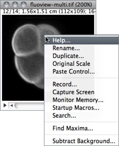

21 Contextual Menu

As mentioned earlier macros and macro tools in the StartupMacros.txt are automatically installed in the submenu and in the toolbar when ImageJ starts up.
In addition, the StartupMacros.txt file also installs the contextual (popup) menu displayed when right-clicking on an image. Other macros and toolsets (e.g., Magic Montage) may also replace the default menu with specialized ones. In this case, re-installing the StartupMacros (using the More Tools Menu↑) will revert the contextual menu to its default.
The ImageJ Macro Language --- Programmer's Reference Guide explains how this menu can be customized:
The menu that is displayed when a user right-clicks (or ctrl-clicks) on an image window can be customized through installation of the "Popup Menu" macro. Any menu has a name and a list of menu items. The newMenu(name, items) macro function allows the creation of a new menu. This menu passes the chosen item as a simple string to the "Popup Menu" macro. From this point you can decide what to do, according to what item was chosen.
/* The "Popup Menu" macro defines the menu that is displayed when right clicking (or ctrl-clicking) on an image.
It is part of the startup macros (StartupMacros.txt) and several other macro toolsets
*/
var pmCmds= newMenu("Popup Menu", newArray("Help...", "Rename...", "Duplicate...", "Original Scale", "Paste Control...", "-",
"Record...", "Capture Screen ", "Monitor Memory...", "Startup Macros...", "Search...", "-", "Find Maxima..."));
macro "Popup Menu" {
cmd= getArgument();
if (cmd=="Help...")
showMessage("About Popup Menu",
"To customize this menu, edit the line that starts with\n"+
"\"var pmCmds\" in ImageJ/macros/StartupMacros.txt.");
else
run(cmd);
}
So, e.g., to add the ability to run the command from the contextual menu one can simply add that command to the list of items defining the PopUp Menu. Note that “-” defines menu separators:
var pmCmds= newMenu("Popup Menu", newArray("Help...", "Rename...", "Duplicate...", "Original Scale", "Paste Control...", "-",
"Record...", "Capture Screen ", "Monitor Memory...", "Startup Macros...", "Search...", "-", "Find Maxima...", "-",
"Subtract Background..."));